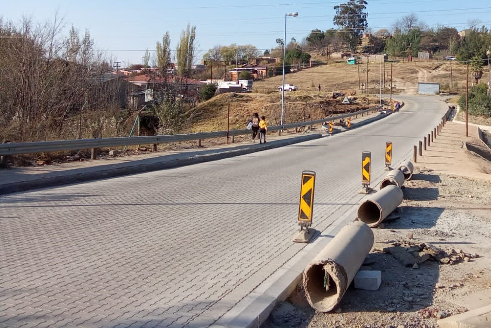
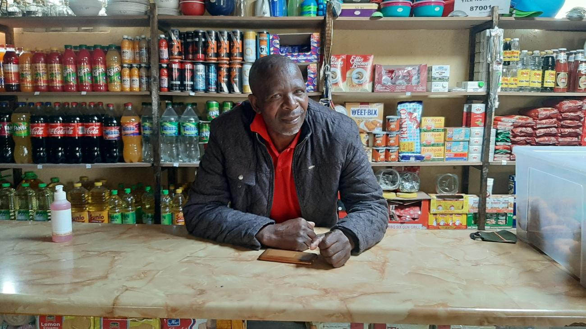

Stay updated with the latest news, stories and developments happening in our community
By: Sepheka Sebolai
Date: 16 March 2026
Residents of Moshoeshoes 2 have welcomed the start of roads repairs aimed at fixing potholes and improving drainage, bringing relief to residents who have long struggled with damaged roads, potholes and poor drainage systems.The project is expected to improve transportation and reduce accidents in the area.

For years, the roads in Moshoeshoe 2 have been in a deteriorating state due to heavy traffic, changing weather conditions, and a lack of consistent maintenance. During rainy seasons, the situation became worse as water would collect in potholes, making it difficult for both pedestrians and drivers to move safely through the area.
According to community members, the poor road conditions have not only affected transportation but also daily life. Taxi operators and delivery drivers have experienced frequent vehicle damage, while residents have faced challenges accessing essential services such as schools, clinics, and local businesses. The current repair project includes filling potholes, improving drainage systems, and resurfacing key sections of the road. Officials have stated that this initiative is part of a broader plan to improve infrastructure within the area and ensure safer and more reliable transportation for everyone.
Residents have expressed optimism about the ongoing work, hoping that it will bring long-term improvements rather than temporary fixes. Many are calling for regular maintenance in the future to prevent the roads from falling back into poor condition and to support the continued development of the community.
By: Sepheka Sebolai
Date: 16 March 2026

The Youth Football Tournament that took place on 15 March 2026 was a resounding success. The event brought together teams from various neighborhoods, showcasing the incredible talent and sportsmanship of young players in the community. The tournament was more than just a competition; it was a celebration of unity and the power of sports to bring people together.
Teams from all over the region participated, each with their own unique style and flair. From impressive goals to nail-biting penalty shootouts, the matches were action-packed and thrilling to watch. The enthusiasm of the players was infectious, with spectators cheering them on and urging them to give their best. One of the standout aspects of the tournament was the emphasis on fair play and camaraderie. Players from different teams were seen exchanging jerseys, sharing oranges, and offering words of encouragement to each other. This spirit of sportsmanship is exactly what youth sports should be about – building character, making new friends, and having a blast while doing it.
The tournament also provided a valuable platform for young players to showcase their skills and potentially catch the eye of local coaches or scouts. Many of the participants are already looking forward to next year’s tournament, eager to improve their game and come back stronger. The organizers of the tournament deserve a huge pat on the back for putting together such a fantastic event. It was a wonderful display of community spirit and a testament to the power of sports to unite and inspire young people. Here’s to many more successful tournaments in the future!
By: Sepheka Sebolai
Date: 16 March 2026
Small business owners in Moshoeshoe 2 are feeling the pinch due to rising costs of goods and services, which is impacting their daily operations and profits. This is a common challenge many entrepreneurs face, and it's great they're speaking out about it.
The increasing prices could be due to various factors such as inflation, supply chain disruptions, or economic changes. It's possible that local businesses are exploring ways to mitigate these costs, like negotiating with suppliers, adjusting pricing strategies, or seeking support from local organizations.
In Lesotho, there are initiatives to support local businesses, such as the People’s Cup, which not only promotes football but also provides financial incentives and grassroots development opportunities.
